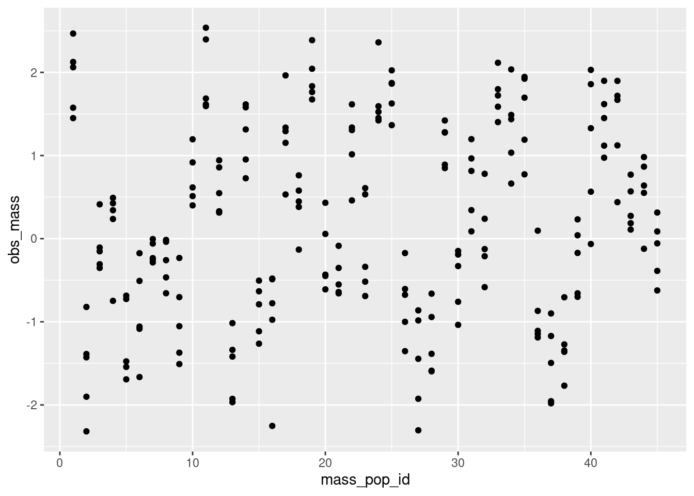

library(targets)
library(ggplot2)
library(tidyverse)
library(tidybayes)Two samples, different animals
You are working with a population of small mammals, Pika supermontanus. They have a disjunct distribution on the tops of mountaintops. They are found in 45 discrete populations, throughout a mountain range. In every case, they are limited to the peaks; however the peaks are not all of the same altitude or area, resulting in variation in populations in the average body size.
You’re conducting a study across these different mountain ranges to see if these animals exhibit variations in behavior. Let’s say you observe each prey item in a set period and record how many prey they catch. This number might be zero, but it could be some other value. You release the animals in an arena, observe them, and then present your results at a conference. Someone comments, “We all know the number of prey an animal can catch is related to their size. Larger ones are better at catching prey because they have bigger paws or something.”
You panic.
You realize that you never measured body size for these different populations. Frantically, you go through all your notes and confirm that you indeed did not measure body size. However, you recall that in a totally different study, someone else measured body size on different individuals. You quickly search through their published raw data and find that you now have a dataset on body size.
The good news is, you now have data on the body sizes, and you’re hoping that this will let you estimate the parameters of this mass-bouncyball relationship you’ve heard of. The bad news is, this are on a completely different group of individuals from the same mountaintops.
You quickly download the spreadsheet of raw data, and scroll quickly down to see how many rows you have. Okay, sure looks like there’s data here…
…but will it be enough?
Modelling when the individuals are not the same
# First, install and load the necessary packages
library(ggdag)
Attaching package: 'ggdag'The following object is masked from 'package:stats':
filterlibrary(dagitty)
# Define your DAG
dag <- dagify(
b_true ~ a_true,
a_observed ~ a_true,
labels = c("a_true" = "a true",
"b_true" = "b true"),
exposure = "a_true",
outcome = "b_true"
)
# Plot the DAG using ggdag
ggdag(dag) +
theme_dag()Here we have one variable that causes another : the average body size of a population causes the average ability to catch bouncy balls. population average Body size also causes the observations made by the other scientist. And population average behaviour determines the observations you actually have from your own sample.
Your ability to measure the relationship between a population’s average mass and average behaviour are limited by your power. But here you have two kinds of power to think about. The first is the power from your own study: how many population syou measured, and how consistent the results of your bouncy-ball assay are. The second kind of power is less in your control: how many individuals per population were weighed for their mass, and how consistent are these observations?
\[ \begin{align} \text{behaviour}_{ij} &\sim \text{Poisson}\left(e^{\beta_0 + \beta_1*\text{mass}_j}\right) \\ \text{mass}_{kj} &\sim \text{Normal}(\mu_j, \sigma) \\ \mu_j &\sim \text{Normal}(0, 1) \\ \beta_0 &\sim \text{Normal}(1.3, 0.2) \\ \beta_1 &\sim \text{Normal}(0.5, 0.2) \\ \sigma &\sim \text{Exponential}(2) \\ \end{align} \]
Here I’m using \(j\) for the label on each population. Notice that I’m labelling individuals in the behaviour sample with \(i\) and individuals in the mass sample with \(k\). This is to make it clearer that they are not the same animals.
n = common sense; or, how constraints can help a model work.
body size differences
your own study: 12 individuals in a behavioural assay
previous study: body sizes from each population.
study of different sample sizes for body size, but same for all studies
different sample sizes
heteroscedasticity in the body sizes
compare to using means and standard deviations
simple case
suppose you took one sample of 15 individuals from each population
simulate_behaviour_sample <- function(mass_vec = runif(45, min = -2, max = 2),
true_intercept = 1.3, true_slope = .5, n_each = 15) {
equal_samp <- rep(mass_vec, each = n_each)
yy <- rpois(n = 45*n_each, exp(true_intercept + true_slope * equal_samp))
list(
nobs = 45*n_each,
npop = 45,
behaviour = yy,
pop_id = rep(1:45, each = n_each),
mass = mass_vec
)
}
simulate_behaviour_sample()$nobs
[1] 675
$npop
[1] 45
$behaviour
[1] 3 5 8 4 6 6 1 4 10 3 11 7 5 11 6 5 1 4 2 3 2 1 1 1 3
[26] 1 3 5 1 5 3 4 3 3 7 4 5 7 3 1 1 7 3 3 4 5 3 3 3 0
[51] 3 3 3 4 4 4 1 3 1 1 4 8 6 5 10 4 9 10 3 6 6 8 6 8 5
[76] 8 13 2 5 4 8 9 5 7 4 7 6 3 7 7 2 1 1 1 2 2 3 1 1 3
[101] 0 0 0 4 2 2 0 1 1 1 1 0 1 1 3 1 2 1 1 3 5 6 4 4 5
[126] 3 1 5 2 3 4 3 2 2 2 2 2 3 2 6 3 5 1 3 0 1 3 2 1 2
[151] 0 0 2 2 1 2 0 1 1 3 2 3 0 0 1 2 0 0 3 2 2 2 4 0 2
[176] 1 4 1 2 2 8 6 2 5 9 8 5 8 3 6 7 8 7 2 9 2 5 2 1 2
[201] 3 3 2 4 4 3 3 3 1 3 9 5 6 12 9 11 15 7 14 10 8 5 10 8 5
[226] 5 5 2 2 1 1 2 2 0 5 1 0 2 4 1 1 0 1 3 2 1 0 3 3 2
[251] 1 1 1 2 1 7 8 5 6 7 6 6 10 6 8 6 9 4 3 2 2 1 1 5 1
[276] 2 4 1 2 1 3 3 2 2 2 4 3 2 0 2 4 2 3 3 3 1 1 3 2 0
[301] 8 6 7 3 3 3 4 4 6 4 2 10 7 7 6 6 6 1 6 6 3 8 7 6 6
[326] 4 5 4 1 5 5 7 2 3 5 2 4 3 2 1 4 0 1 6 2 3 11 8 7 8
[351] 9 8 6 9 13 2 5 12 5 8 3 3 0 0 1 1 1 1 2 1 2 0 1 1 2
[376] 0 4 1 3 4 5 2 2 3 3 2 5 4 1 5 4 0 5 7 4 2 2 3 4 2
[401] 4 6 1 2 5 7 8 10 11 7 10 7 10 4 5 11 8 7 16 4 0 2 1 2 2
[426] 3 1 0 0 1 4 0 2 2 1 9 5 10 11 8 9 3 6 7 11 7 13 7 6 4
[451] 5 5 2 2 4 3 5 4 4 2 0 4 0 3 3 8 6 6 9 2 7 3 4 5 4
[476] 4 6 4 2 5 3 5 5 3 7 8 5 9 2 5 7 11 4 10 4 1 1 0 1 2
[501] 3 2 4 1 5 3 4 1 2 1 5 9 2 1 4 2 4 7 7 3 4 1 6 2 2
[526] 12 11 18 12 11 6 11 6 8 10 9 5 6 9 9 2 3 0 1 0 2 0 3 2 0
[551] 1 4 1 1 5 2 1 6 3 3 3 6 7 4 5 2 1 4 2 0 2 1 5 2 2
[576] 2 2 4 3 2 7 4 4 6 5 10 6 11 6 7 7 5 6 7 3 5 7 5 11 9
[601] 5 5 7 3 6 7 7 12 7 8 6 6 6 7 9 5 1 1 1 4 2 1 2 6 2
[626] 3 4 4 5 1 3 1 2 1 4 2 4 2 2 0 1 3 0 1 1 2 3 2 1 2
[651] 3 0 2 2 0 0 4 3 4 1 8 8 6 16 3 9 8 9 7 3 11 9 10 6 9
$pop_id
[1] 1 1 1 1 1 1 1 1 1 1 1 1 1 1 1 2 2 2 2 2 2 2 2 2 2
[26] 2 2 2 2 2 3 3 3 3 3 3 3 3 3 3 3 3 3 3 3 4 4 4 4 4
[51] 4 4 4 4 4 4 4 4 4 4 5 5 5 5 5 5 5 5 5 5 5 5 5 5 5
[76] 6 6 6 6 6 6 6 6 6 6 6 6 6 6 6 7 7 7 7 7 7 7 7 7 7
[101] 7 7 7 7 7 8 8 8 8 8 8 8 8 8 8 8 8 8 8 8 9 9 9 9 9
[126] 9 9 9 9 9 9 9 9 9 9 10 10 10 10 10 10 10 10 10 10 10 10 10 10 10
[151] 11 11 11 11 11 11 11 11 11 11 11 11 11 11 11 12 12 12 12 12 12 12 12 12 12
[176] 12 12 12 12 12 13 13 13 13 13 13 13 13 13 13 13 13 13 13 13 14 14 14 14 14
[201] 14 14 14 14 14 14 14 14 14 14 15 15 15 15 15 15 15 15 15 15 15 15 15 15 15
[226] 16 16 16 16 16 16 16 16 16 16 16 16 16 16 16 17 17 17 17 17 17 17 17 17 17
[251] 17 17 17 17 17 18 18 18 18 18 18 18 18 18 18 18 18 18 18 18 19 19 19 19 19
[276] 19 19 19 19 19 19 19 19 19 19 20 20 20 20 20 20 20 20 20 20 20 20 20 20 20
[301] 21 21 21 21 21 21 21 21 21 21 21 21 21 21 21 22 22 22 22 22 22 22 22 22 22
[326] 22 22 22 22 22 23 23 23 23 23 23 23 23 23 23 23 23 23 23 23 24 24 24 24 24
[351] 24 24 24 24 24 24 24 24 24 24 25 25 25 25 25 25 25 25 25 25 25 25 25 25 25
[376] 26 26 26 26 26 26 26 26 26 26 26 26 26 26 26 27 27 27 27 27 27 27 27 27 27
[401] 27 27 27 27 27 28 28 28 28 28 28 28 28 28 28 28 28 28 28 28 29 29 29 29 29
[426] 29 29 29 29 29 29 29 29 29 29 30 30 30 30 30 30 30 30 30 30 30 30 30 30 30
[451] 31 31 31 31 31 31 31 31 31 31 31 31 31 31 31 32 32 32 32 32 32 32 32 32 32
[476] 32 32 32 32 32 33 33 33 33 33 33 33 33 33 33 33 33 33 33 33 34 34 34 34 34
[501] 34 34 34 34 34 34 34 34 34 34 35 35 35 35 35 35 35 35 35 35 35 35 35 35 35
[526] 36 36 36 36 36 36 36 36 36 36 36 36 36 36 36 37 37 37 37 37 37 37 37 37 37
[551] 37 37 37 37 37 38 38 38 38 38 38 38 38 38 38 38 38 38 38 38 39 39 39 39 39
[576] 39 39 39 39 39 39 39 39 39 39 40 40 40 40 40 40 40 40 40 40 40 40 40 40 40
[601] 41 41 41 41 41 41 41 41 41 41 41 41 41 41 41 42 42 42 42 42 42 42 42 42 42
[626] 42 42 42 42 42 43 43 43 43 43 43 43 43 43 43 43 43 43 43 43 44 44 44 44 44
[651] 44 44 44 44 44 44 44 44 44 44 45 45 45 45 45 45 45 45 45 45 45 45 45 45 45
$mass
[1] 1.124889799 -0.696728610 0.461748447 -0.582622994 1.137635996
[6] 0.928601537 -1.760363693 -1.827600236 -0.355816013 -1.072890643
[11] -1.891710906 -1.474750693 0.939088456 -0.596606515 1.819806675
[16] -0.497727497 -1.829820244 0.928959717 -0.816119441 -0.863123904
[21] 0.865697554 0.629153955 -0.359965537 1.738930494 -1.845992300
[26] -0.567054695 -0.295146172 1.664664946 -1.610361351 1.668597762
[31] -0.474842170 0.710981610 1.098874176 -1.936096602 0.306025951
[36] 1.490632125 -1.495406161 -0.008038674 0.557976713 1.268839560
[41] 1.140731453 -0.693727816 -0.571277190 -1.176815417 1.541920304simulates one dataset
known_averages <- cmdstanr::cmdstan_model(here::here("posts/2024-06-09-measurement-different-samples/known_averages.stan"))
known_averagesdata {
int<lower=1> nobs;
int<lower=1> npop;
array[nobs] int behaviour;
array[nobs] int<lower=1,upper=npop> pop_id;
vector[npop] mass;
}
parameters {
real intercept;
real slope;
}
model {
intercept ~ normal(1.3, .2);
slope ~ normal(.5, .2);
behaviour ~ poisson_log(intercept + slope*mass[pop_id]);
}datalist <- simulate_behaviour_sample()
known_averages$sample(data = datalist)Running MCMC with 4 sequential chains...
Chain 1 Iteration: 1 / 2000 [ 0%] (Warmup)
Chain 1 Iteration: 100 / 2000 [ 5%] (Warmup)
Chain 1 Iteration: 200 / 2000 [ 10%] (Warmup)
Chain 1 Iteration: 300 / 2000 [ 15%] (Warmup)
Chain 1 Iteration: 400 / 2000 [ 20%] (Warmup)
Chain 1 Iteration: 500 / 2000 [ 25%] (Warmup)
Chain 1 Iteration: 600 / 2000 [ 30%] (Warmup)
Chain 1 Iteration: 700 / 2000 [ 35%] (Warmup)
Chain 1 Iteration: 800 / 2000 [ 40%] (Warmup)
Chain 1 Iteration: 900 / 2000 [ 45%] (Warmup)
Chain 1 Iteration: 1000 / 2000 [ 50%] (Warmup)
Chain 1 Iteration: 1001 / 2000 [ 50%] (Sampling)
Chain 1 Iteration: 1100 / 2000 [ 55%] (Sampling)
Chain 1 Iteration: 1200 / 2000 [ 60%] (Sampling)
Chain 1 Iteration: 1300 / 2000 [ 65%] (Sampling)
Chain 1 Iteration: 1400 / 2000 [ 70%] (Sampling)
Chain 1 Iteration: 1500 / 2000 [ 75%] (Sampling)
Chain 1 Iteration: 1600 / 2000 [ 80%] (Sampling)
Chain 1 Iteration: 1700 / 2000 [ 85%] (Sampling)
Chain 1 Iteration: 1800 / 2000 [ 90%] (Sampling)
Chain 1 Iteration: 1900 / 2000 [ 95%] (Sampling)
Chain 1 Iteration: 2000 / 2000 [100%] (Sampling)
Chain 1 finished in 0.1 seconds.
Chain 2 Iteration: 1 / 2000 [ 0%] (Warmup)
Chain 2 Iteration: 100 / 2000 [ 5%] (Warmup)
Chain 2 Iteration: 200 / 2000 [ 10%] (Warmup)
Chain 2 Iteration: 300 / 2000 [ 15%] (Warmup)
Chain 2 Iteration: 400 / 2000 [ 20%] (Warmup)
Chain 2 Iteration: 500 / 2000 [ 25%] (Warmup)
Chain 2 Iteration: 600 / 2000 [ 30%] (Warmup)
Chain 2 Iteration: 700 / 2000 [ 35%] (Warmup)
Chain 2 Iteration: 800 / 2000 [ 40%] (Warmup)
Chain 2 Iteration: 900 / 2000 [ 45%] (Warmup)
Chain 2 Iteration: 1000 / 2000 [ 50%] (Warmup)
Chain 2 Iteration: 1001 / 2000 [ 50%] (Sampling)
Chain 2 Iteration: 1100 / 2000 [ 55%] (Sampling)
Chain 2 Iteration: 1200 / 2000 [ 60%] (Sampling)
Chain 2 Iteration: 1300 / 2000 [ 65%] (Sampling)
Chain 2 Iteration: 1400 / 2000 [ 70%] (Sampling)
Chain 2 Iteration: 1500 / 2000 [ 75%] (Sampling)
Chain 2 Iteration: 1600 / 2000 [ 80%] (Sampling)
Chain 2 Iteration: 1700 / 2000 [ 85%] (Sampling)
Chain 2 Iteration: 1800 / 2000 [ 90%] (Sampling)
Chain 2 Iteration: 1900 / 2000 [ 95%] (Sampling)
Chain 2 Iteration: 2000 / 2000 [100%] (Sampling)
Chain 2 finished in 0.1 seconds.
Chain 3 Iteration: 1 / 2000 [ 0%] (Warmup)
Chain 3 Iteration: 100 / 2000 [ 5%] (Warmup)
Chain 3 Iteration: 200 / 2000 [ 10%] (Warmup)
Chain 3 Iteration: 300 / 2000 [ 15%] (Warmup)
Chain 3 Iteration: 400 / 2000 [ 20%] (Warmup)
Chain 3 Iteration: 500 / 2000 [ 25%] (Warmup)
Chain 3 Iteration: 600 / 2000 [ 30%] (Warmup)
Chain 3 Iteration: 700 / 2000 [ 35%] (Warmup)
Chain 3 Iteration: 800 / 2000 [ 40%] (Warmup)
Chain 3 Iteration: 900 / 2000 [ 45%] (Warmup)
Chain 3 Iteration: 1000 / 2000 [ 50%] (Warmup)
Chain 3 Iteration: 1001 / 2000 [ 50%] (Sampling)
Chain 3 Iteration: 1100 / 2000 [ 55%] (Sampling)
Chain 3 Iteration: 1200 / 2000 [ 60%] (Sampling)
Chain 3 Iteration: 1300 / 2000 [ 65%] (Sampling)
Chain 3 Iteration: 1400 / 2000 [ 70%] (Sampling)
Chain 3 Iteration: 1500 / 2000 [ 75%] (Sampling)
Chain 3 Iteration: 1600 / 2000 [ 80%] (Sampling)
Chain 3 Iteration: 1700 / 2000 [ 85%] (Sampling)
Chain 3 Iteration: 1800 / 2000 [ 90%] (Sampling)
Chain 3 Iteration: 1900 / 2000 [ 95%] (Sampling)
Chain 3 Iteration: 2000 / 2000 [100%] (Sampling)
Chain 3 finished in 0.2 seconds.
Chain 4 Iteration: 1 / 2000 [ 0%] (Warmup)
Chain 4 Iteration: 100 / 2000 [ 5%] (Warmup)
Chain 4 Iteration: 200 / 2000 [ 10%] (Warmup)
Chain 4 Iteration: 300 / 2000 [ 15%] (Warmup)
Chain 4 Iteration: 400 / 2000 [ 20%] (Warmup)
Chain 4 Iteration: 500 / 2000 [ 25%] (Warmup)
Chain 4 Iteration: 600 / 2000 [ 30%] (Warmup)
Chain 4 Iteration: 700 / 2000 [ 35%] (Warmup)
Chain 4 Iteration: 800 / 2000 [ 40%] (Warmup)
Chain 4 Iteration: 900 / 2000 [ 45%] (Warmup)
Chain 4 Iteration: 1000 / 2000 [ 50%] (Warmup)
Chain 4 Iteration: 1001 / 2000 [ 50%] (Sampling)
Chain 4 Iteration: 1100 / 2000 [ 55%] (Sampling)
Chain 4 Iteration: 1200 / 2000 [ 60%] (Sampling)
Chain 4 Iteration: 1300 / 2000 [ 65%] (Sampling)
Chain 4 Iteration: 1400 / 2000 [ 70%] (Sampling)
Chain 4 Iteration: 1500 / 2000 [ 75%] (Sampling)
Chain 4 Iteration: 1600 / 2000 [ 80%] (Sampling)
Chain 4 Iteration: 1700 / 2000 [ 85%] (Sampling)
Chain 4 Iteration: 1800 / 2000 [ 90%] (Sampling)
Chain 4 Iteration: 1900 / 2000 [ 95%] (Sampling)
Chain 4 Iteration: 2000 / 2000 [100%] (Sampling)
Chain 4 finished in 0.2 seconds.
All 4 chains finished successfully.
Mean chain execution time: 0.2 seconds.
Total execution time: 1.0 seconds. variable mean median sd mad q5 q95 rhat ess_bulk ess_tail
lp__ 1506.33 1506.62 0.97 0.71 1504.43 1507.25 1.01 1800 2500
intercept 1.31 1.31 0.02 0.02 1.27 1.34 1.00 2281 2114
slope 0.50 0.50 0.02 0.02 0.47 0.53 1.00 2446 2806mass known from a sample
simulate_behaviour_mass_sample <- function(
mass_vec = runif(45, min = -2, max = 2),
true_intercept = 1.3, true_slope = .5,
n_each_behav = 15, n_each_mass = 20, true_sigma_mass = .5) {
equal_samp <- rep(mass_vec, each = n_each_behav)
## behaviour simulation
yy <- rpois(n = 45*n_each_behav,
exp(true_intercept + true_slope * equal_samp))
xx <- rnorm(n = 45*n_each_mass,
mean = rep(mass_vec, each = n_each_mass),
sd = true_sigma_mass
)
list(
nobs_behav = 45*n_each_behav,
nobs_mass = 45*n_each_mass,
npop = 45,
behaviour = yy,
behav_pop_id = rep(1:45, each = n_each_behav),
obs_mass = xx,
mass_pop_id = rep(1:45, each = n_each_mass),
.mass = mass_vec
)
}
simulate_behaviour_mass_sample()$nobs_behav
[1] 675
$nobs_mass
[1] 900
$npop
[1] 45
$behaviour
[1] 0 1 2 2 2 2 2 3 1 1 3 2 3 3 6 6 10 7 5 11 8 12 11 8 12
[26] 9 5 14 4 7 13 3 8 10 12 5 15 12 13 9 9 9 6 9 9 7 7 3 10 8
[51] 3 12 6 9 7 3 6 4 9 9 9 6 5 7 8 8 4 11 9 8 6 4 8 4 8
[76] 9 16 7 5 9 5 7 5 6 5 4 8 6 6 8 4 1 7 3 3 2 1 2 2 5
[101] 0 2 2 4 3 3 7 1 6 3 2 2 1 2 2 5 1 3 6 1 7 8 6 3 5
[126] 5 3 7 6 6 7 2 5 3 5 5 3 4 6 5 7 6 7 14 5 9 12 6 7 7
[151] 5 8 1 10 1 5 4 3 4 7 6 10 5 3 9 5 0 1 3 4 5 2 0 6 1
[176] 1 2 5 3 5 1 1 0 2 1 1 1 1 2 1 1 3 0 2 1 5 3 5 3 2
[201] 4 6 5 5 5 6 5 3 6 4 3 3 3 1 2 3 3 6 3 4 3 7 3 4 2
[226] 7 9 4 11 11 9 13 6 9 12 6 8 14 12 7 2 0 3 0 5 3 1 0 3 0
[251] 1 2 1 2 3 9 9 9 9 6 3 4 7 11 5 6 9 11 3 7 12 9 14 7 13
[276] 8 8 9 7 6 8 8 7 9 8 7 4 5 5 11 8 7 5 8 12 7 7 8 6 10
[301] 2 1 1 2 1 2 0 2 3 1 3 3 2 1 1 6 5 6 2 3 5 1 4 3 6
[326] 9 2 5 2 5 2 4 3 2 2 5 0 3 7 4 7 5 2 5 3 2 1 1 0 2
[351] 0 4 2 1 0 2 2 1 1 2 3 6 3 7 3 7 5 8 4 8 5 4 7 4 5
[376] 4 2 6 4 3 5 4 6 4 5 4 4 3 4 3 8 9 11 11 12 6 8 13 9 9
[401] 10 9 5 8 4 7 10 8 7 9 4 11 8 6 11 7 9 4 12 8 3 3 10 7 8
[426] 4 3 7 7 4 5 2 6 9 8 4 4 3 6 5 4 6 3 8 7 9 2 5 3 3
[451] 2 0 1 0 2 2 0 2 2 2 3 1 1 3 4 3 1 1 5 2 2 2 2 4 6
[476] 5 2 5 1 3 5 2 4 3 1 2 3 5 1 3 1 2 4 1 1 11 2 1 5 3
[501] 2 2 4 2 2 4 4 2 4 5 4 7 4 3 1 1 5 6 2 3 2 3 3 7 3
[526] 13 7 11 7 10 10 6 12 9 10 4 7 8 8 8 3 0 1 4 1 3 2 5 3 1
[551] 1 4 3 3 3 3 8 10 5 7 6 4 5 7 4 5 8 7 6 4 4 7 5 5 7
[576] 7 2 5 3 8 9 7 10 10 4 4 7 4 3 6 4 2 2 4 8 4 4 3 3 7
[601] 2 5 1 2 0 2 2 1 0 4 2 2 0 3 3 1 4 2 2 2 6 5 4 1 3
[626] 5 3 1 1 3 4 2 3 3 1 2 2 4 2 1 3 3 1 2 3 5 3 5 6 5
[651] 2 8 5 6 3 7 2 6 8 5 8 6 8 11 15 8 12 14 8 11 15 12 9 12 5
$behav_pop_id
[1] 1 1 1 1 1 1 1 1 1 1 1 1 1 1 1 2 2 2 2 2 2 2 2 2 2
[26] 2 2 2 2 2 3 3 3 3 3 3 3 3 3 3 3 3 3 3 3 4 4 4 4 4
[51] 4 4 4 4 4 4 4 4 4 4 5 5 5 5 5 5 5 5 5 5 5 5 5 5 5
[76] 6 6 6 6 6 6 6 6 6 6 6 6 6 6 6 7 7 7 7 7 7 7 7 7 7
[101] 7 7 7 7 7 8 8 8 8 8 8 8 8 8 8 8 8 8 8 8 9 9 9 9 9
[126] 9 9 9 9 9 9 9 9 9 9 10 10 10 10 10 10 10 10 10 10 10 10 10 10 10
[151] 11 11 11 11 11 11 11 11 11 11 11 11 11 11 11 12 12 12 12 12 12 12 12 12 12
[176] 12 12 12 12 12 13 13 13 13 13 13 13 13 13 13 13 13 13 13 13 14 14 14 14 14
[201] 14 14 14 14 14 14 14 14 14 14 15 15 15 15 15 15 15 15 15 15 15 15 15 15 15
[226] 16 16 16 16 16 16 16 16 16 16 16 16 16 16 16 17 17 17 17 17 17 17 17 17 17
[251] 17 17 17 17 17 18 18 18 18 18 18 18 18 18 18 18 18 18 18 18 19 19 19 19 19
[276] 19 19 19 19 19 19 19 19 19 19 20 20 20 20 20 20 20 20 20 20 20 20 20 20 20
[301] 21 21 21 21 21 21 21 21 21 21 21 21 21 21 21 22 22 22 22 22 22 22 22 22 22
[326] 22 22 22 22 22 23 23 23 23 23 23 23 23 23 23 23 23 23 23 23 24 24 24 24 24
[351] 24 24 24 24 24 24 24 24 24 24 25 25 25 25 25 25 25 25 25 25 25 25 25 25 25
[376] 26 26 26 26 26 26 26 26 26 26 26 26 26 26 26 27 27 27 27 27 27 27 27 27 27
[401] 27 27 27 27 27 28 28 28 28 28 28 28 28 28 28 28 28 28 28 28 29 29 29 29 29
[426] 29 29 29 29 29 29 29 29 29 29 30 30 30 30 30 30 30 30 30 30 30 30 30 30 30
[451] 31 31 31 31 31 31 31 31 31 31 31 31 31 31 31 32 32 32 32 32 32 32 32 32 32
[476] 32 32 32 32 32 33 33 33 33 33 33 33 33 33 33 33 33 33 33 33 34 34 34 34 34
[501] 34 34 34 34 34 34 34 34 34 34 35 35 35 35 35 35 35 35 35 35 35 35 35 35 35
[526] 36 36 36 36 36 36 36 36 36 36 36 36 36 36 36 37 37 37 37 37 37 37 37 37 37
[551] 37 37 37 37 37 38 38 38 38 38 38 38 38 38 38 38 38 38 38 38 39 39 39 39 39
[576] 39 39 39 39 39 39 39 39 39 39 40 40 40 40 40 40 40 40 40 40 40 40 40 40 40
[601] 41 41 41 41 41 41 41 41 41 41 41 41 41 41 41 42 42 42 42 42 42 42 42 42 42
[626] 42 42 42 42 42 43 43 43 43 43 43 43 43 43 43 43 43 43 43 43 44 44 44 44 44
[651] 44 44 44 44 44 44 44 44 44 44 45 45 45 45 45 45 45 45 45 45 45 45 45 45 45
$obs_mass
[1] -1.212743926 -1.029871371 -0.603820034 -0.705170533 -0.046754418
[6] -1.305358116 -0.793734393 -0.999272839 -0.791201310 -0.500372169
[11] -0.866954149 -0.420809525 -0.884060184 -0.709354733 -1.490777625
[16] -0.519923250 -1.198232392 -0.445549069 -0.616380436 -1.410691650
[21] 1.305427585 1.733740274 1.993695102 1.735548549 1.769900230
[26] 1.294269655 1.736156275 2.822888910 1.071508724 1.369492295
[31] 0.596385730 1.126114467 1.855414425 1.270951764 2.224017108
[36] 0.765221157 0.928910622 1.308102332 2.055559214 1.646971724
[41] 2.076940177 1.400141300 2.004648419 1.462025223 0.942239743
[46] 1.492541379 2.018238720 2.137023884 2.241939441 1.381009958
[51] 2.260003982 2.006134588 1.677268486 1.708147705 2.565596689
[56] 1.641396858 1.058388790 1.541336919 2.812503756 2.415920540
[61] 1.769324319 2.073529560 1.439133858 1.506393320 1.436421931
[66] 1.084449318 0.890535112 1.826175052 2.258192831 1.134293238
[71] 1.333561001 1.722028785 1.560682920 1.176747603 1.160428387
[76] 1.463597435 2.252170119 1.619321188 1.896152180 0.795673417
[81] 0.803608979 0.526916543 0.535438479 0.992850900 0.720788512
[86] 1.213687087 0.383085369 0.394386724 1.546413209 1.052262431
[91] 0.712249142 0.920006351 0.784636707 1.188755401 -0.204646543
[96] 0.952833886 2.224371160 0.109277114 1.294305083 0.554125110
[101] 1.120619249 0.876740944 1.178171382 1.639520021 0.739172607
[106] 1.198852360 0.651145186 1.390084038 0.744081960 0.948046294
[111] 0.675101836 1.900731651 1.002411637 1.230684673 1.514823494
[116] 1.539134796 0.717670685 0.742993885 0.649764827 1.043377647
[121] -0.080752167 -0.028589765 -0.301102636 -1.332818877 -0.240236017
[126] -0.839337130 -0.699060165 -0.226476642 -0.992288984 -0.086313165
[131] -0.333130135 -0.668669104 -0.603919717 -0.653652863 -0.390847961
[136] -0.863893868 -0.605576142 -0.637565794 -1.089525252 -1.083888236
[141] -1.900079810 -0.795150956 -0.175294447 -1.173611892 -0.707840823
[146] -0.959649679 -1.394486455 -1.500467812 -1.179477834 -1.670068784
[151] -1.477244337 -1.428639168 -1.410243328 -0.779694289 -1.301367936
[156] -1.268804029 -0.616904757 -0.721744743 -1.211692903 -1.294031371
[161] 0.059036221 0.495026120 1.421056704 1.379613982 0.394890081
[166] 0.878100569 0.839723871 0.677655789 0.917359910 1.360341440
[171] 1.536011008 2.125776933 0.869000743 1.736026354 1.071022113
[176] 0.887189912 -0.012770163 1.245196613 0.965979299 0.697885331
[181] 0.915473399 1.441570698 1.825155251 1.044431477 2.256361956
[186] 2.156941644 0.967905517 0.592611537 1.519454141 0.612280255
[191] 1.766646754 2.181708428 1.663605583 0.950981200 1.141155182
[196] 1.275148831 1.684790485 0.878026635 1.177253028 1.775261280
[201] 0.374417115 1.255460469 1.546348094 1.555302544 1.461950294
[206] 1.412028935 0.733444732 2.140705301 1.564904155 0.787045576
[211] 1.082759700 1.399768723 2.274308691 1.975647076 1.632910618
[216] 0.797343191 0.769158130 1.540833945 1.894694089 2.010909333
[221] -0.124729491 0.133055366 -0.424823197 0.113318946 -0.320505419
[226] -0.662828762 -0.193569575 0.303618590 0.390130967 -0.192182203
[231] -0.469327052 -0.489143146 -0.408141330 -0.405791274 -1.114952161
[236] -0.884782897 -0.454718149 -0.269390795 -0.465119275 -0.248905101
[241] -1.663910130 -1.266753892 -1.718576749 -1.455046062 -0.854055615
[246] -1.473081109 -1.963690375 -1.427028244 -2.132599853 -1.754678141
[251] -1.753701247 -2.276529538 -1.030440569 -1.236081807 -1.621947754
[256] -1.082385828 -2.505907813 -1.268513273 -1.616254186 -1.460560195
[261] 0.467669719 0.755092911 0.077551472 0.329209709 0.892286273
[266] 0.748049439 0.250498555 0.101403305 1.497376202 1.085836550
[271] 1.115890849 0.280495322 0.275913937 0.489063271 0.152278270
[276] 0.330302420 0.718637391 -0.467102499 0.855933142 0.889610027
[281] -0.238392229 -0.394794975 -0.413905975 -0.677719171 -0.178390924
[286] 0.619082274 -0.139016190 -0.780955009 0.128855797 -0.050108754
[291] -0.585817918 -0.112593926 0.639092563 -1.055902974 0.076243540
[296] -0.473413869 -0.292133102 -1.536157853 -1.126777124 -1.031110592
[301] 1.517631479 2.456198172 1.311248080 1.682145378 1.939449850
[306] 0.812243224 0.794495906 1.641513852 1.805696990 2.278683431
[311] 1.733095644 2.676227163 2.795242743 1.359114714 2.259767071
[316] 1.892679270 1.690160365 1.412070636 1.665072674 2.132588961
[321] -1.311884273 -1.014565350 -0.449383207 -2.125344655 -1.339221157
[326] -1.121711628 -0.598774018 -1.933687726 -2.280771406 -1.455243677
[331] -0.919719470 -2.113015462 -1.332043581 -1.338520023 -1.478310179
[336] -0.626992175 -1.853285626 -1.375268565 -0.843874989 -1.952146276
[341] 1.280824452 0.945652464 -0.198336999 0.580755401 -0.018678598
[346] 0.815364436 0.139123958 0.792511700 0.696072519 0.884956179
[351] 1.455107536 1.740368530 2.081914370 1.186273622 0.392232766
[356] 0.828893334 0.871031849 1.050850094 1.056730419 1.082889433
[361] 1.952586913 1.150368963 2.657203626 1.221848400 1.478761516
[366] 2.248033987 2.237314960 2.188072104 1.613014494 1.226697742
[371] 2.191143594 1.767289494 1.100439430 1.921273920 1.940537006
[376] 1.229830008 2.516897420 2.122247117 1.020920606 2.006786917
[381] 2.311864976 1.439864498 1.952271670 1.202585824 0.440030870
[386] 2.150083574 1.385427434 0.905239063 1.591686944 1.773663225
[391] 1.978506167 1.765119309 1.889911927 1.805924771 0.213779670
[396] 0.583556366 0.515789142 1.944519314 1.056144319 0.644433485
[401] -1.626014650 -1.472149152 -2.023236364 -1.550397927 -1.768501061
[406] -1.084456123 -1.388877622 -1.302655451 -0.858712176 -1.978290364
[411] -2.276347764 -1.007026301 -1.379236933 -1.480840676 -1.350736965
[416] -0.888755870 -1.881292499 -1.441345523 -0.696736450 -1.378183682
[421] 0.443119556 0.385078595 0.678466808 0.400707076 0.695246556
[426] 0.404701688 0.617739633 0.988049157 0.696434730 0.903414252
[431] 0.234452275 0.920520125 0.490545327 0.617072262 0.409499911
[436] 0.617873856 0.208038841 1.235027697 0.329101149 0.825482578
[441] 0.011677214 0.642216712 0.537965158 0.047917902 0.181000734
[446] 0.119120371 0.500805040 0.314922551 0.381316940 0.288072993
[451] -0.315656689 -0.688418266 -0.341138325 0.172636050 0.670083990
[456] 0.857318586 -0.523084309 0.137164584 0.485075780 -0.092253855
[461] -1.770492715 -1.492956829 -2.015015749 -1.907289653 -1.894132496
[466] -2.001442652 -2.411369258 -2.029872639 -2.285173857 -1.459245708
[471] -0.635486829 -0.858918073 -2.067235536 -1.352770151 -1.598091832
[476] -2.417183512 -2.094448321 -1.981668181 -1.068122377 -1.380299405
[481] 0.528132113 0.781277486 0.484929969 0.487871814 1.578554902
[486] 1.572142420 -0.350394488 0.693248942 0.783088833 0.837823713
[491] 0.778664951 0.276161665 0.391906637 1.223937105 0.729203397
[496] 0.577102501 0.112453620 1.479742369 1.098264054 0.725301530
[501] -0.003947870 0.224862260 -0.177692621 -0.063910146 0.054295328
[506] 0.496321904 0.271954284 -0.198246487 0.889251734 -0.070735475
[511] 0.311957472 -0.208409558 -0.347809908 0.072479792 0.559801582
[516] 0.740359942 0.504470607 0.562106574 0.891037741 0.571318547
[521] 2.005075112 2.456245031 2.188541241 2.528739381 1.473382359
[526] 1.972319253 1.049741119 1.121560102 1.780610327 3.162376454
[531] 1.865748543 2.152588102 2.260102156 1.863985265 1.820891451
[536] 2.911949821 2.049785646 1.723662837 2.524220646 2.246736548
[541] 1.498567813 0.943833282 1.719124175 0.996303669 0.328190675
[546] 1.989214059 1.710777285 1.062381669 2.283000292 1.918062023
[551] 2.296078750 1.064051927 0.748478754 1.697643187 2.034701791
[556] 1.487015790 0.622266159 1.158586368 0.563607375 2.094197003
[561] 1.142814344 0.245845663 0.496821754 0.514213278 0.239925441
[566] 0.097801218 0.042503226 1.062055499 0.883679007 0.599685084
[571] 0.753500085 0.065036681 1.832856194 0.935626482 0.192656157
[576] 0.251769579 0.093795117 0.548704752 0.407123928 0.457232380
[581] 0.459079957 0.379450413 0.753140408 0.424394555 0.128135056
[586] 1.573642366 0.729559378 1.181041173 0.566252951 0.105255421
[591] 0.364610998 0.161093263 -0.413062020 -0.848194699 0.966377390
[596] 1.355115780 1.084247783 -0.189400250 0.464088112 -0.064988516
[601] -1.529541239 -0.905429323 -1.763840059 -1.014125529 -1.275347381
[606] -1.104211163 -1.269699927 -2.728769637 -1.925133108 -1.243390266
[611] -1.654961386 -1.926454901 -1.510487861 -2.352971589 -1.136598765
[616] -1.889737944 -2.352468743 -2.249943440 -1.629403071 -1.567172368
[621] -0.938947091 0.282495437 0.112095151 -1.256496468 0.487568570
[626] -0.804694734 -0.697761781 -0.398634159 -0.506556918 -0.469546407
[631] 0.185111450 -0.075475174 0.898319833 0.076750300 -0.648864660
[636] -0.473911556 -0.899451886 -0.340807823 -0.865870689 -0.753786120
[641] -1.654649670 -0.737706174 -2.144142467 -1.902301630 -1.353850340
[646] -1.472700881 -0.976112109 -2.332070819 -1.326094923 -1.067872352
[651] -1.652785831 -1.914787494 -0.933422018 -1.416256194 -1.274598701
[656] -1.536450052 -1.836804373 -1.223621226 -0.294647025 -1.140193446
[661] -0.697393146 -0.443843813 -1.274369426 -0.270046504 0.038550849
[666] 0.214453936 -0.353770511 -1.277479459 -0.467937318 -0.887266922
[671] -0.083151528 -1.382118489 0.093953418 -0.215164722 0.027149892
[676] -1.228756645 -0.001001382 -0.767992769 -0.196793999 0.564292603
[681] -1.564706533 -0.585479062 -0.694409141 -0.317372589 -1.451374414
[686] -0.580397739 -1.153866902 -0.306365342 -0.398797475 -0.614215351
[691] -0.029199011 -0.745744429 -0.826293527 -0.582021482 -1.078845781
[696] -0.692551899 -1.345207835 -1.581707189 -0.592168210 -0.383018486
[701] 1.451679906 1.332318335 1.262235684 1.219434568 1.925408890
[706] 1.972253895 2.095164239 1.121700564 1.565330488 0.744935802
[711] 1.574170988 1.589336248 1.506842058 1.447082433 1.029053468
[716] 1.070441230 1.586695140 0.363224124 0.559965755 0.896630304
[721] -0.570798660 -0.850014386 -0.271941193 -0.382442678 -0.344129526
[726] -0.318296777 0.244362712 -0.716153978 0.351232849 -0.245767012
[731] -1.165769643 -0.565757637 -1.134604992 -0.617909439 -0.444963556
[736] -0.219395660 -0.369110984 0.287333468 -0.741370391 -1.140307521
[741] 0.660034527 0.888197464 0.483643821 1.343010698 1.617660060
[746] 0.981326602 1.050732292 0.711895310 1.510321055 0.935529518
[751] 0.895451682 2.351494494 1.349287852 2.163762176 1.283651410
[756] 1.019729273 2.241302862 2.045039558 2.088204565 1.673262343
[761] 0.384855184 0.966235830 0.708136527 0.416591725 0.905981249
[766] 1.293935127 0.904986259 0.400436122 1.157455047 0.913035448
[771] 0.915832434 0.956797613 0.827753871 0.342574562 0.972907164
[776] 0.497349607 0.712164979 1.208304038 1.242559461 1.187122132
[781] -0.527336555 -0.207993486 -0.282954361 0.432123438 -0.664119059
[786] 0.915716377 0.621403310 0.030168063 0.053669201 0.566214440
[791] -0.238201274 0.563400073 -0.840108096 -0.217590083 0.074826631
[796] -0.548476651 -0.366261591 0.651806718 0.584590608 -0.191767150
[801] -1.579031837 -1.105971683 -1.569017819 -1.434556348 -1.873612105
[806] -2.103583177 -2.241007429 -1.224544311 -2.092276054 -1.432824750
[811] -1.503512658 -2.529989346 -0.670415124 -1.464743072 -1.568139089
[816] -2.093144607 -1.848001403 -1.210984058 -2.111969820 -1.841068143
[821] 0.394528388 -0.606253001 -0.466395775 -1.226937624 0.062179480
[826] -0.775701852 0.239033315 -1.049662397 -0.517998280 0.531594387
[831] -1.218656999 0.439675734 -0.628522211 -0.551607097 -0.314432536
[836] 0.209225193 0.016915351 -0.377718924 -0.021408007 0.244645716
[841] 0.011695877 -0.213268122 -0.437296891 -1.136522647 -0.549350855
[846] -0.735164474 -0.607270758 -0.623370322 -0.743471061 -0.404263767
[851] -0.425545079 0.196935256 -1.006379078 -0.463612804 -0.468830194
[856] -0.404660382 -0.831428888 -0.623605105 -0.225067041 0.211924334
[861] 0.308425649 -0.239415810 0.418352769 0.194651079 0.323342113
[866] 0.083236631 0.815825005 -0.345987746 0.567753771 1.025523956
[871] -0.126571028 0.466242134 -0.040070496 -0.987072937 0.132985029
[876] 0.839343380 0.482104876 -0.209221026 1.307815110 0.775151854
[881] 1.875962075 1.313719724 1.201138372 1.897555505 1.894977165
[886] 2.337206578 0.786506773 1.330561316 1.651261625 1.830543935
[891] 1.616180940 1.641525447 0.989854235 2.448329428 1.573900814
[896] 1.646875610 1.533196524 1.664959603 2.069778835 1.647407724
$mass_pop_id
[1] 1 1 1 1 1 1 1 1 1 1 1 1 1 1 1 1 1 1 1 1 2 2 2 2 2
[26] 2 2 2 2 2 2 2 2 2 2 2 2 2 2 2 3 3 3 3 3 3 3 3 3 3
[51] 3 3 3 3 3 3 3 3 3 3 4 4 4 4 4 4 4 4 4 4 4 4 4 4 4
[76] 4 4 4 4 4 5 5 5 5 5 5 5 5 5 5 5 5 5 5 5 5 5 5 5 5
[101] 6 6 6 6 6 6 6 6 6 6 6 6 6 6 6 6 6 6 6 6 7 7 7 7 7
[126] 7 7 7 7 7 7 7 7 7 7 7 7 7 7 7 8 8 8 8 8 8 8 8 8 8
[151] 8 8 8 8 8 8 8 8 8 8 9 9 9 9 9 9 9 9 9 9 9 9 9 9 9
[176] 9 9 9 9 9 10 10 10 10 10 10 10 10 10 10 10 10 10 10 10 10 10 10 10 10
[201] 11 11 11 11 11 11 11 11 11 11 11 11 11 11 11 11 11 11 11 11 12 12 12 12 12
[226] 12 12 12 12 12 12 12 12 12 12 12 12 12 12 12 13 13 13 13 13 13 13 13 13 13
[251] 13 13 13 13 13 13 13 13 13 13 14 14 14 14 14 14 14 14 14 14 14 14 14 14 14
[276] 14 14 14 14 14 15 15 15 15 15 15 15 15 15 15 15 15 15 15 15 15 15 15 15 15
[301] 16 16 16 16 16 16 16 16 16 16 16 16 16 16 16 16 16 16 16 16 17 17 17 17 17
[326] 17 17 17 17 17 17 17 17 17 17 17 17 17 17 17 18 18 18 18 18 18 18 18 18 18
[351] 18 18 18 18 18 18 18 18 18 18 19 19 19 19 19 19 19 19 19 19 19 19 19 19 19
[376] 19 19 19 19 19 20 20 20 20 20 20 20 20 20 20 20 20 20 20 20 20 20 20 20 20
[401] 21 21 21 21 21 21 21 21 21 21 21 21 21 21 21 21 21 21 21 21 22 22 22 22 22
[426] 22 22 22 22 22 22 22 22 22 22 22 22 22 22 22 23 23 23 23 23 23 23 23 23 23
[451] 23 23 23 23 23 23 23 23 23 23 24 24 24 24 24 24 24 24 24 24 24 24 24 24 24
[476] 24 24 24 24 24 25 25 25 25 25 25 25 25 25 25 25 25 25 25 25 25 25 25 25 25
[501] 26 26 26 26 26 26 26 26 26 26 26 26 26 26 26 26 26 26 26 26 27 27 27 27 27
[526] 27 27 27 27 27 27 27 27 27 27 27 27 27 27 27 28 28 28 28 28 28 28 28 28 28
[551] 28 28 28 28 28 28 28 28 28 28 29 29 29 29 29 29 29 29 29 29 29 29 29 29 29
[576] 29 29 29 29 29 30 30 30 30 30 30 30 30 30 30 30 30 30 30 30 30 30 30 30 30
[601] 31 31 31 31 31 31 31 31 31 31 31 31 31 31 31 31 31 31 31 31 32 32 32 32 32
[626] 32 32 32 32 32 32 32 32 32 32 32 32 32 32 32 33 33 33 33 33 33 33 33 33 33
[651] 33 33 33 33 33 33 33 33 33 33 34 34 34 34 34 34 34 34 34 34 34 34 34 34 34
[676] 34 34 34 34 34 35 35 35 35 35 35 35 35 35 35 35 35 35 35 35 35 35 35 35 35
[701] 36 36 36 36 36 36 36 36 36 36 36 36 36 36 36 36 36 36 36 36 37 37 37 37 37
[726] 37 37 37 37 37 37 37 37 37 37 37 37 37 37 37 38 38 38 38 38 38 38 38 38 38
[751] 38 38 38 38 38 38 38 38 38 38 39 39 39 39 39 39 39 39 39 39 39 39 39 39 39
[776] 39 39 39 39 39 40 40 40 40 40 40 40 40 40 40 40 40 40 40 40 40 40 40 40 40
[801] 41 41 41 41 41 41 41 41 41 41 41 41 41 41 41 41 41 41 41 41 42 42 42 42 42
[826] 42 42 42 42 42 42 42 42 42 42 42 42 42 42 42 43 43 43 43 43 43 43 43 43 43
[851] 43 43 43 43 43 43 43 43 43 43 44 44 44 44 44 44 44 44 44 44 44 44 44 44 44
[876] 44 44 44 44 44 45 45 45 45 45 45 45 45 45 45 45 45 45 45 45 45 45 45 45 45
$.mass
[1] -0.8966992 1.7216931 1.9577618 1.4844050 0.9131645 1.1156090
[7] -0.6267659 -1.0654106 0.8058525 1.3620857 1.4157861 -0.5266898
[13] -1.4257260 0.5047228 -0.3647463 1.8612103 -1.4701799 0.9802199
[19] 1.8440085 1.3304059 -1.4886796 0.6050675 0.1705870 -1.5535027
[25] 0.7856261 0.2899217 1.7314978 1.3513200 0.7160286 0.5354942
[31] -1.7368147 -0.2628505 -1.4623506 -0.4502098 -0.6181694 1.4774859
[37] -0.3613725 1.0311605 1.0033580 0.1138571 -1.7246181 -0.3771467
[43] -0.6795379 0.1064362 1.7558613different_samples <- cmdstanr::cmdstan_model(here::here("posts/2024-06-09-measurement-different-samples/different_samples.stan"))datalist <- simulate_behaviour_mass_sample(n_each_mass = 10)
diff_samples_post <- different_samples$sample(data = datalist, parallel_chains =4, refresh = 0)Running MCMC with 4 parallel chains...Chain 1 Informational Message: The current Metropolis proposal is about to be rejected because of the following issue:Chain 1 Exception: normal_lpdf: Scale parameter is 0, but must be positive! (in '/tmp/RtmpkLe2eE/model-11052436251ac.stan', line 25, column 2 to column 51)Chain 1 If this warning occurs sporadically, such as for highly constrained variable types like covariance matrices, then the sampler is fine,Chain 1 but if this warning occurs often then your model may be either severely ill-conditioned or misspecified.Chain 1 Chain 3 Informational Message: The current Metropolis proposal is about to be rejected because of the following issue:Chain 3 Exception: normal_lpdf: Scale parameter is 0, but must be positive! (in '/tmp/RtmpkLe2eE/model-11052436251ac.stan', line 25, column 2 to column 51)Chain 3 If this warning occurs sporadically, such as for highly constrained variable types like covariance matrices, then the sampler is fine,Chain 3 but if this warning occurs often then your model may be either severely ill-conditioned or misspecified.Chain 3 Chain 1 finished in 0.4 seconds.
Chain 2 finished in 0.4 seconds.
Chain 3 finished in 0.4 seconds.
Chain 4 finished in 0.5 seconds.
All 4 chains finished successfully.
Mean chain execution time: 0.4 seconds.
Total execution time: 0.6 seconds.diff_samples_post |>
gather_rvars(mass[id]) |>
mutate(true_mass = datalist$.mass[id],
id = forcats::fct_reorder(as.factor(id), true_mass)) |>
ggplot(aes(x = id)) +
stat_halfeye(aes(dist = .value)) +
geom_point(aes(y = true_mass), col = "red")diff_samples_post$draws("slope") |>
mcmc_areas()Error in mcmc_areas(diff_samples_post$draws("slope")): could not find function "mcmc_areas"Visualize this somehow – two different axes of points, one for each axis
Simulate changing sample size for each species mass:
library(tidyverse)
library(tidybayes)
data_simulations <- expand_grid(massrep = 1:3, n_each_mass = c(2, 5, 10, 20, 40)) |>
rowwise() |>
mutate(datalist = list(simulate_behaviour_mass_sample(n_each_mass = n_each_mass)))
simulation_post <- data_simulations |>
mutate(post = list(different_samples$sample(data = datalist, chains = 2, refresh = 0)))Running MCMC with 2 sequential chains...Chain 1 Informational Message: The current Metropolis proposal is about to be rejected because of the following issue:Chain 1 Exception: normal_lpdf: Scale parameter is 0, but must be positive! (in '/tmp/RtmpkLe2eE/model-11052436251ac.stan', line 25, column 2 to column 51)Chain 1 If this warning occurs sporadically, such as for highly constrained variable types like covariance matrices, then the sampler is fine,Chain 1 but if this warning occurs often then your model may be either severely ill-conditioned or misspecified.Chain 1 Chain 1 finished in 0.6 seconds.Chain 2 Informational Message: The current Metropolis proposal is about to be rejected because of the following issue:Chain 2 Exception: normal_lpdf: Scale parameter is 0, but must be positive! (in '/tmp/RtmpkLe2eE/model-11052436251ac.stan', line 25, column 2 to column 51)Chain 2 If this warning occurs sporadically, such as for highly constrained variable types like covariance matrices, then the sampler is fine,Chain 2 but if this warning occurs often then your model may be either severely ill-conditioned or misspecified.Chain 2 Chain 2 finished in 0.7 seconds.
Both chains finished successfully.
Mean chain execution time: 0.7 seconds.
Total execution time: 1.6 seconds.
Running MCMC with 2 sequential chains...
Chain 1 finished in 0.5 seconds.Chain 2 Informational Message: The current Metropolis proposal is about to be rejected because of the following issue:Chain 2 Exception: normal_lpdf: Scale parameter is 0, but must be positive! (in '/tmp/RtmpkLe2eE/model-11052436251ac.stan', line 25, column 2 to column 51)Chain 2 If this warning occurs sporadically, such as for highly constrained variable types like covariance matrices, then the sampler is fine,Chain 2 but if this warning occurs often then your model may be either severely ill-conditioned or misspecified.Chain 2 Chain 2 finished in 0.7 seconds.
Both chains finished successfully.
Mean chain execution time: 0.6 seconds.
Total execution time: 1.5 seconds.
Running MCMC with 2 sequential chains...
Chain 1 finished in 0.4 seconds.
Chain 2 finished in 0.7 seconds.
Both chains finished successfully.
Mean chain execution time: 0.6 seconds.
Total execution time: 1.4 seconds.
Running MCMC with 2 sequential chains...
Chain 1 finished in 0.5 seconds.Chain 2 Informational Message: The current Metropolis proposal is about to be rejected because of the following issue:Chain 2 Exception: normal_lpdf: Scale parameter is 0, but must be positive! (in '/tmp/RtmpkLe2eE/model-11052436251ac.stan', line 25, column 2 to column 51)Chain 2 If this warning occurs sporadically, such as for highly constrained variable types like covariance matrices, then the sampler is fine,Chain 2 but if this warning occurs often then your model may be either severely ill-conditioned or misspecified.Chain 2 Chain 2 finished in 0.5 seconds.
Both chains finished successfully.
Mean chain execution time: 0.5 seconds.
Total execution time: 1.1 seconds.
Running MCMC with 2 sequential chains...
Chain 1 finished in 0.6 seconds.
Chain 2 finished in 0.6 seconds.
Both chains finished successfully.
Mean chain execution time: 0.6 seconds.
Total execution time: 1.4 seconds.
Running MCMC with 2 sequential chains...
Chain 1 finished in 0.5 seconds.Chain 2 Informational Message: The current Metropolis proposal is about to be rejected because of the following issue:Chain 2 Exception: normal_lpdf: Scale parameter is 0, but must be positive! (in '/tmp/RtmpkLe2eE/model-11052436251ac.stan', line 25, column 2 to column 51)Chain 2 If this warning occurs sporadically, such as for highly constrained variable types like covariance matrices, then the sampler is fine,Chain 2 but if this warning occurs often then your model may be either severely ill-conditioned or misspecified.Chain 2 Chain 2 finished in 0.5 seconds.
Both chains finished successfully.
Mean chain execution time: 0.5 seconds.
Total execution time: 1.1 seconds.
Running MCMC with 2 sequential chains...
Chain 1 finished in 0.5 seconds.Chain 2 Informational Message: The current Metropolis proposal is about to be rejected because of the following issue:Chain 2 Exception: normal_lpdf: Scale parameter is 0, but must be positive! (in '/tmp/RtmpkLe2eE/model-11052436251ac.stan', line 25, column 2 to column 51)Chain 2 If this warning occurs sporadically, such as for highly constrained variable types like covariance matrices, then the sampler is fine,Chain 2 but if this warning occurs often then your model may be either severely ill-conditioned or misspecified.Chain 2 Chain 2 finished in 0.5 seconds.
Both chains finished successfully.
Mean chain execution time: 0.5 seconds.
Total execution time: 1.2 seconds.
Running MCMC with 2 sequential chains...
Chain 1 finished in 0.6 seconds.Chain 2 Informational Message: The current Metropolis proposal is about to be rejected because of the following issue:Chain 2 Exception: normal_lpdf: Scale parameter is 0, but must be positive! (in '/tmp/RtmpkLe2eE/model-11052436251ac.stan', line 25, column 2 to column 51)Chain 2 If this warning occurs sporadically, such as for highly constrained variable types like covariance matrices, then the sampler is fine,Chain 2 but if this warning occurs often then your model may be either severely ill-conditioned or misspecified.Chain 2 Chain 2 Informational Message: The current Metropolis proposal is about to be rejected because of the following issue:Chain 2 Exception: normal_lpdf: Scale parameter is 0, but must be positive! (in '/tmp/RtmpkLe2eE/model-11052436251ac.stan', line 25, column 2 to column 51)Chain 2 If this warning occurs sporadically, such as for highly constrained variable types like covariance matrices, then the sampler is fine,Chain 2 but if this warning occurs often then your model may be either severely ill-conditioned or misspecified.Chain 2 Chain 2 finished in 0.7 seconds.
Both chains finished successfully.
Mean chain execution time: 0.6 seconds.
Total execution time: 1.5 seconds.
Running MCMC with 2 sequential chains...
Chain 1 finished in 0.5 seconds.Chain 2 Informational Message: The current Metropolis proposal is about to be rejected because of the following issue:Chain 2 Exception: normal_lpdf: Scale parameter is 0, but must be positive! (in '/tmp/RtmpkLe2eE/model-11052436251ac.stan', line 25, column 2 to column 51)Chain 2 If this warning occurs sporadically, such as for highly constrained variable types like covariance matrices, then the sampler is fine,Chain 2 but if this warning occurs often then your model may be either severely ill-conditioned or misspecified.Chain 2 Chain 2 Informational Message: The current Metropolis proposal is about to be rejected because of the following issue:Chain 2 Exception: normal_lpdf: Scale parameter is 0, but must be positive! (in '/tmp/RtmpkLe2eE/model-11052436251ac.stan', line 25, column 2 to column 51)Chain 2 If this warning occurs sporadically, such as for highly constrained variable types like covariance matrices, then the sampler is fine,Chain 2 but if this warning occurs often then your model may be either severely ill-conditioned or misspecified.Chain 2 Chain 2 finished in 0.5 seconds.
Both chains finished successfully.
Mean chain execution time: 0.5 seconds.
Total execution time: 1.1 seconds.
Running MCMC with 2 sequential chains...
Chain 1 finished in 0.6 seconds.
Chain 2 finished in 0.5 seconds.
Both chains finished successfully.
Mean chain execution time: 0.5 seconds.
Total execution time: 1.3 seconds.
Running MCMC with 2 sequential chains...Chain 1 Informational Message: The current Metropolis proposal is about to be rejected because of the following issue:Chain 1 Exception: normal_lpdf: Scale parameter is 0, but must be positive! (in '/tmp/RtmpkLe2eE/model-11052436251ac.stan', line 25, column 2 to column 51)Chain 1 If this warning occurs sporadically, such as for highly constrained variable types like covariance matrices, then the sampler is fine,Chain 1 but if this warning occurs often then your model may be either severely ill-conditioned or misspecified.Chain 1 Chain 1 finished in 0.6 seconds.
Chain 2 finished in 0.8 seconds.
Both chains finished successfully.
Mean chain execution time: 0.7 seconds.
Total execution time: 1.6 seconds.
Running MCMC with 2 sequential chains...
Chain 1 finished in 0.5 seconds.Chain 2 Informational Message: The current Metropolis proposal is about to be rejected because of the following issue:Chain 2 Exception: normal_lpdf: Scale parameter is 0, but must be positive! (in '/tmp/RtmpkLe2eE/model-11052436251ac.stan', line 25, column 2 to column 51)Chain 2 If this warning occurs sporadically, such as for highly constrained variable types like covariance matrices, then the sampler is fine,Chain 2 but if this warning occurs often then your model may be either severely ill-conditioned or misspecified.Chain 2 Chain 2 finished in 0.5 seconds.
Both chains finished successfully.
Mean chain execution time: 0.5 seconds.
Total execution time: 1.3 seconds.
Running MCMC with 2 sequential chains...
Chain 1 finished in 0.6 seconds.
Chain 2 finished in 0.4 seconds.
Both chains finished successfully.
Mean chain execution time: 0.5 seconds.
Total execution time: 1.2 seconds.
Running MCMC with 2 sequential chains...
Chain 1 finished in 0.5 seconds.
Chain 2 finished in 0.5 seconds.
Both chains finished successfully.
Mean chain execution time: 0.5 seconds.
Total execution time: 1.1 seconds.
Running MCMC with 2 sequential chains...Chain 1 Informational Message: The current Metropolis proposal is about to be rejected because of the following issue:Chain 1 Exception: normal_lpdf: Scale parameter is 0, but must be positive! (in '/tmp/RtmpkLe2eE/model-11052436251ac.stan', line 25, column 2 to column 51)Chain 1 If this warning occurs sporadically, such as for highly constrained variable types like covariance matrices, then the sampler is fine,Chain 1 but if this warning occurs often then your model may be either severely ill-conditioned or misspecified.Chain 1 Chain 1 finished in 0.5 seconds.
Chain 2 finished in 0.6 seconds.
Both chains finished successfully.
Mean chain execution time: 0.6 seconds.
Total execution time: 1.4 seconds.simulation_post$post[[1]]$draws(variables = "slope") |> posterior::as_draws_df()# A draws_df: 1000 iterations, 2 chains, and 1 variables
slope
1 0.52
2 0.57
3 0.46
4 0.57
5 0.49
6 0.50
7 0.50
8 0.52
9 0.52
10 0.56
# ... with 1990 more draws
# ... hidden reserved variables {'.chain', '.iteration', '.draw'}simulation_post |>
mutate(draws = list(post$draws(variables = "slope") |> posterior::as_draws_df())) |>
# mutate(tidybayes::spread_rvars(post, slope)) |>
select(-post) |>
arrange(n_each_mass) |>
unnest(cols = "draws") |>
ggplot(aes(x = massrep, y = slope)) + stat_halfeye() +
facet_wrap(~n_each_mass) +
geom_hline(yintercept = .5, col = "darkgreen")Why is it bimodal??
library(bayesplot)This is bayesplot version 1.11.1- Online documentation and vignettes at mc-stan.org/bayesplot- bayesplot theme set to bayesplot::theme_default() * Does _not_ affect other ggplot2 plots * See ?bayesplot_theme_set for details on theme settingone_post <- simulation_post |>
filter(massrep == 3, n_each_mass == 5)
tidybayes::spread_rvars(one_post[["post"]][[1]], slope) |>
ggplot(aes(dist = slope)) +
stat_histinterval(breaks = 70)What on earth do the data look like??
one_post$datalist[[1]] |>
with(tibble(mass_pop_id, obs_mass)) |>
ggplot(aes(x = mass_pop_id, y = obs_mass)) + geom_point()
mass_df <- one_post$datalist[[1]] |>
with(tibble(mass_pop_id, obs_mass)) |>
group_by(mass_pop_id) |>
summarize(mean_mass = mean(obs_mass),
sd_mass = sd(obs_mass)) |>
ungroup() |>
rename(id = mass_pop_id)
behav_df <- one_post$datalist[[1]] |>
with(tibble(behav_pop_id, behaviour)) |>
group_by(behav_pop_id) |>
summarize(mean_behav = mean(behaviour)) |>
ungroup() |>
rename(id = behav_pop_id)
left_join(behav_df, mass_df) |>
ggplot(aes(xmin = mean_mass - sd_mass,
xmax = mean_mass + sd_mass,
x = mean_mass, y = mean_behav)) +
geom_pointrange()Joining with `by = join_by(id)`Constraints can help
There are two things that seem to help this model: large sample sizes, and a constraint on the slope. What I suspect is happening is that, when sample sizes for mass are small, the model is presented with two ways to “bend” the line: changing the value of the slope, or changing the relative mass of the populations.